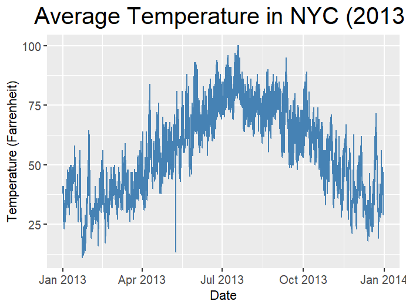
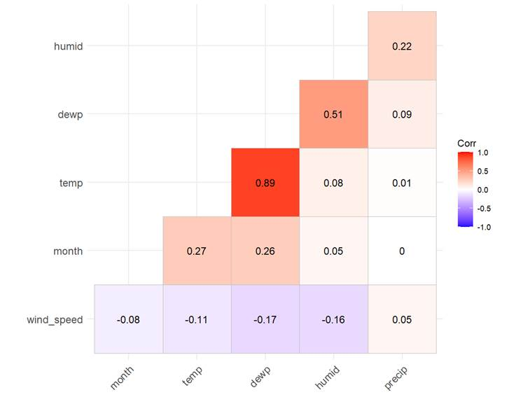
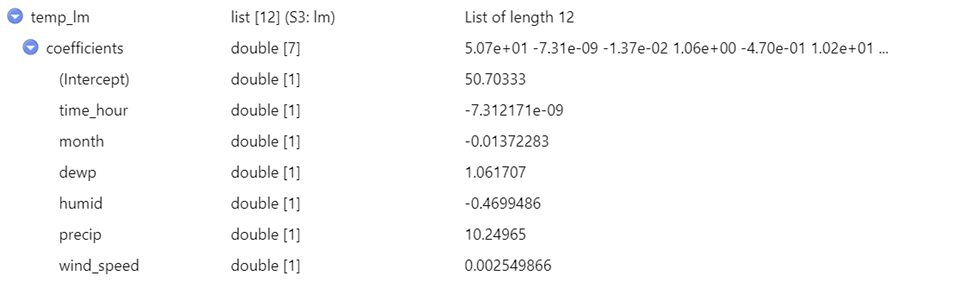
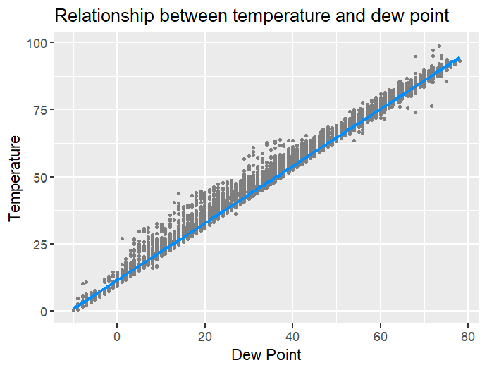

Exploring
Trends in Global Temperature
Name (English): Regina Floretta
Objective
This project aims to analyze and visualize trends in global temperature over the past century using historical temperature data.
Data Source
You can use the "nycflights13" package in R, which includes a dataset called "weather" containing historical weather data from New York City airports.
Steps
1. Data Exploration: Load the necessary libraries and explore the "weather" dataset to understand its structure and variables. Identify the variables related to temperature and extract the relevant data.
Command
Install.packages('dplyr')
library('dplyr')
Output
> install.packages('dplyr')
WARNING: Rtools
is required to build R packages but is not currently installed. Please download
and install the appropriate version of Rtools before
proceeding:
https://cran.rstudio.com/bin/windows/Rtools/
Installing package into
‘C:/Users/regin/AppData/Local/R/win-library/4.4’
(as ‘lib’ is unspecified)
trying URL
'https://cran.rstudio.com/bin/windows/contrib/4.4/dplyr_1.1.4.zip'
Content type
'application/zip' length 1582586 bytes (1.5 MB)
downloaded 1.5 MB
package ‘dplyr’
successfully unpacked and MD5 sums checked
Warning in install.packages :
cannot remove prior installation of package ‘dplyr’
Warning in install.packages :
problem copying
C:\Users\regin\AppData\Local\R\win-library\4.4\00LOCK\dplyr\libs\x64\dplyr.dll
to C:\Users\regin\AppData\Local\R\win-library\4.4\dplyr\libs\x64\dplyr.dll:
Permission denied
Warning in install.packages :
restored ‘dplyr’
The downloaded binary packages
are in
C:\Users\regin\AppData\Local\Temp\RtmpaEHisT\downloaded_packages
> library('dplyr')
Attaching package: ‘dplyr’The following objects are masked from ‘package:stats’: filter, lagThe following objects are masked from ‘package:base’: intersect, setdiff, setequal, union Explain the command
To clean and analyze the data better, the package ‘dplyr’ (a part of tidyverse) will help ease data manipulation.
Explain the output
As the package wasn’t installed, it was first downloaded and stored so that it can be called by using the library function onward. The library function calls the package to use.
Command
Install.packages('ggplot2')
library('ggplot2')
Output
> install.packages("ggplot2")
WARNING: Rtools is required to build R packages but is not currently installed. Please download and install the appropriate version of Rtools before proceeding: https://cran.rstudio.com/bin/windows/Rtools/Installing package into ‘C:/Users/regin/AppData/Local/R/win-library/4.4’(as ‘lib’ is unspecified)trying URL 'https://cran.rstudio.com/bin/windows/contrib/4.4/ggplot2_3.5.1.zip'Content type 'application/zip' length 5012224 bytes (4.8 MB)downloaded 4.8 MB package ‘ggplot2’ successfully unpacked and MD5 sums checked The downloaded binary packages are inC:\Users\regin\AppData\Local\Temp\RtmpaEHisT\downloaded_packages
> library('ggplot2')
Explain the command
The package ‘ggplot2’ is going to be used for data visualization. The package enable us to create charts that can help communicate the data analysis.
Explain the output
The package wasn’t installed yet, so we need to install the package first then call the package by using the library function.
Command
Install.packages('ggcorrplot')
library('ggcorrplot')
Output
> install.packages("ggcorrplot")
WARNING: Rtools is required to build R packages but is not currently installed. Please download and install the appropriate version of Rtools before proceeding: https://cran.rstudio.com/bin/windows/Rtools/Installing package into ‘C:/Users/regin/AppData/Local/R/win-library/4.4’(as ‘lib’ is unspecified)trying URL 'https://cran.rstudio.com/bin/windows/contrib/4.4/ggcorrplot_0.1.4.1.zip'Content type 'application/zip' length 31819 bytes (31 KB)downloaded 31 KB package ‘ggcorrplot’ successfully unpacked and MD5 sums checked The downloaded binary packages are inC:\Users\regin\AppData\Local\Temp\RtmpaEHisT\downloaded_packages
> library('ggcorrplot')
Explain the command
To visualize a correlation plot might be difficult without
the help of another package. Therefore, ‘ggcorrplot’
is installed to aid in easier visualization for correlation matrixes and
functions.
Explain the output
Again, the package wasn’t available to call yet, so it was installed prior to the library function.
Command
Install.packages('visreg')
library('visreg')
Output
> install.packages("visreg")
WARNING: Rtools is required to build R packages but is not currently installed. Please download and install the appropriate version of Rtools before proceeding: https://cran.rstudio.com/bin/windows/Rtools/Installing package into ‘C:/Users/regin/AppData/Local/R/win-library/4.4’(as ‘lib’ is unspecified)trying URL 'https://cran.rstudio.com/bin/windows/contrib/4.4/visreg_2.7.0.zip'Content type 'application/zip' length 301125 bytes (294 KB)downloaded 294 KB package ‘visreg’ successfully unpacked and MD5 sums checked The downloaded binary packages are inC:\Users\regin\AppData\Local\Temp\RtmpaEHisT\downloaded_packages
> library('visreg')
Explain the command
For regression models, the package ‘visreg’
can be useful in visualizing the data properly.
Explain the output
Like the previous packages, the package is first installed by using the install.packages function before being able to be called by the library function.
Command
Install.packages('nycflights13')
library('nycflights13')
Output
> install.packages("nycflights13")
WARNING: Rtools is required to build R packages but is not currently installed. Please download and install the appropriate version of Rtools before proceeding: https://cran.rstudio.com/bin/windows/Rtools/Installing package into ‘C:/Users/regin/AppData/Local/R/win-library/4.4’(as ‘lib’ is unspecified)trying URL 'https://cran.rstudio.com/bin/windows/contrib/4.4/nycflights13_1.0.2.zip'Content type 'application/zip' length 4511191 bytes (4.3 MB)downloaded 4.3 MB package ‘nycflights13’ successfully unpacked and MD5 sums checked The downloaded binary packages are inC:\Users\regin\AppData\Local\Temp\RtmpaEHisT\downloaded_packages
> library('nycflights13')
Explain the command
The data source being utilized in this assignment is ‘nycflights13’.
It has the information of weather, temperature, and related variables of three
New York airports.
Explain the output
The installation of packages is done the last time for this package and called upon using the library function.
2. Data Cleaning: Clean the data by handling missing values, outliers, and any inconsistencies in the dataset that may affect the analysis.
Command
View(weather)
Output
> View(weather)
Explain the command
Scanning the data can be useful in determining which variables can be useful for the purpose of the assignment. To view the entirety of the dataset, the function View is used.
Explain the output
The output directs us to the table of the dataset and we could see clearly that the dataset possess several columns in which can be used/set as the variables in this assignment.
Command
head(weather)
dim(weather)
names(weather)
Output
> head(weather)
# A tibble: 6 × 15 origin year month day hour temp dewp humid wind_dir wind_speed wind_gust precip<chr> <int> <int> <int> <int> <dbl> <dbl> <dbl> <dbl> <dbl> <dbl> <dbl>
1 EWR 2013 1 1 1 39.0 26.1 59.4 270 10.4 NA 0
2 EWR 2013 1 1 2 39.0 27.0 61.6 250 8.06 NA 03 EWR 2013 1 1 3 39.0 28.0 64.4 240 11.5 NA 04 EWR 2013 1 1 4 39.9 28.0 62.2 250 12.7 NA 05 EWR 2013 1 1 5 39.0 28.0 64.4 260 12.7 NA 06 EWR 2013 1 1 6 37.9 28.0 67.2 240 11.5 NA 0# ℹ 3 more variables: pressure <dbl>, visib <dbl>, time_hour <dttm>> dim(weather)
[1] 26115 15> names(weather)
[1] "origin" "year" "month" "day" "hour" "temp" [7] "dewp" "humid" "wind_dir" "wind_speed" "wind_gust" "precip" [13] "pressure" "visib" "time_hour"
Explain the command
These commands are used to gain some general idea about the dataset that we are going to use. For instance, the head command shows the data of the first few observations (6 observations, to be exact) along with the columns’ data types. This can be useful for data cleaning and manipulation as different data types might react differently to some functions.
The dim function quickly informs the number of rows
(observations) and the number of columns (possible variables). Lastly, the names function gives the name of the columns which
was used by myself to determine which columns were going to be useful for this
assignment.
Explain the output
The first output indicates that the data might be ordered by its time in an ascending manner. It also informs that most of the variables are double-precision floating numbers (dbl), which means that they are numeric values, but hold a decimal point unlike integers.
The second output tells us that there is 26,115 number of rows or observations and 15 columns (excluding index).
The third output shows all the names for the 15 columns, some of which are: ‘origin’ indicating the NHC airport in which the data is taken, ‘temp’ or the temperature in Fahrenheit, etc.
Command
unique(weather$origin)
Output
> unique(weather$origin)
[1] "EWR" "JFK" "LGA"
Explain the command
The command will output the unique elements present in the
column stated (in this case in the column ‘origin’). It can be used to determine
whether or not the column can be omitted in
regressions or further analysis considering it is homogenous.
Explain the output
The output explains that the column ‘origin’ has three different elements in which can be useful or further analyzed.
Command
temp_data <- select(weather,
origin, time_hour, month, temp, dewp,
humid, wind_speed, precip)
head(temp_data)
Output
> temp_data <- select(weather, origin, time_hour, month, temp, dewp, humid, wind_speed, precip)
> head(temp_data)
# A tibble: 6 × 8
origin time_hour month temp dewp humid wind_speed precip<chr> <dttm> <int> <dbl> <dbl> <dbl> <dbl> <dbl>
1 EWR 2013-01-01 01:00:00 1 39.0 26.1 59.4 10.4 0
2 EWR 2013-01-01 02:00:00 1 39.0 27.0 61.6 8.06 03 EWR 2013-01-01 03:00:00 1 39.0 28.0 64.4 11.5 04 EWR 2013-01-01 04:00:00 1 39.9 28.0 62.2 12.7 05 EWR 2013-01-01 05:00:00 1 39.0 28.0 64.4 12.7 06 EWR 2013-01-01 06:00:00 1 37.9 28.0 67.2 11.5 0
Explain the command
While the dataset has relatively few number of columns, I think there might be some that could be omitted. To create a smaller dataset can be useful for quicker processing and a more focused analysis in the next step. To create a new dataset from the available dataset, the select() function is used by stating the dataset name, and the columns wished to be included.
The head() functions
can help prove that the previous function is successful.
Explain the output
The output of the second function shows the newly created dataset with 8 columns instead of 15 columns.
Command
which(is.na(temp_data))
temp_data$temp[is.na(temp_data$temp)] <- mean(temp_data$temp, na.rm = TRUE)
temp_data$dewp[is.na(temp_data$dewp)] <- mean(temp_data$dewp, na.rm = TRUE)
temp_data$humid[is.na(temp_data$humid)] <- mean(temp_data$humid, na.rm = TRUE)
temp_data$wind_speed[is.na(temp_data$wind_speed)] <- mean(temp_data$wind_speed, na.rm = TRUE)
which(is.na(temp_data))
Output
> which(is.na(temp_data))
[1] 83937 110052 136167 158742 168782 169810 170194> temp_data$temp[is.na(temp_data$temp)] <- mean(temp_data$temp, na.rm = TRUE)
> temp_data$dewp[is.na(temp_data$dewp)] <- mean(temp_data$dewp, na.rm = TRUE)> temp_data$humid[is.na(temp_data$humid)] <- mean(temp_data$humid, na.rm = TRUE)> temp_data$wind_speed[is.na(temp_data$wind_speed)] <- mean(temp_data$wind_speed, na.rm = TRUE)> which(is.na(temp_data))integer(0)
Explain the command
One of the most important data cleaning process
is the process of removing or replacing null values in the dataset. The which(is.na()) function will call the positions of null values
in the dataset. After finding out the position and corresponding column, we
will replace the values with the mean of the data. Lastly, we check whether all
null values are replaced with the same function in the beginning.
Explain the output
The output shows that there are 7 missing values from the dataset, and after the tweaks there are none.
Command
q1
<- quantile(temp_data$temp,
.25)
q3
<- quantile(temp_data$temp,
.75)
iqr <- IQR(temp_data$temp)
outliers
<- subset(temp_data, temp_data$temp<(q1 - 1.5*iqr)
| temp_data$temp>(q3 + 1.5*iqr))
count(outliers)
boxplot(temp_data$temp)
Output
> q1 <- quantile(temp_data$temp, .25)
> q3 <- quantile(temp_data$temp, .75)
> iqr <- IQR(temp_data$temp)
>
> outliers <- subset(temp_data, temp_data$temp<(q1 - 1.5*iqr) | temp_data$temp>(q3 + 1.5*iqr))
> count(outliers)
# A tibble: 1 × 1 n<int>
1 0
>
> boxplot(temp_data$temp)
Explain the command
Outliers should be cleaned out of the data to prevent inaccuracies. There are several methods in finding outliers, but the IQR is used in this assignment. First, we need to assign three variables (q1,q3, and iqr) before using the IQR formula. The quantile function will find the 1st, 2nd, and 3rd quantiles of a specified dataset or even column of the dataset. In this case, the 1st and 3rd quantiles are called for the ‘temp’ column of the dataset.
Then we assign a formula to a new variable named ‘outliers’ in which we will input the formula of outliers. Subset() can be used to select (without creating a new dataset) observations from the dataset that satisfy the specifications- in this case, the IQR formula. Lastly, count() is used to know the sum of the number of observations in the variable.
To ensure that the IQR method can be used, we visualize the
dataset with boxplot as it helps to generally spot outliers. The boxplot() function is easy to use by just
typing the column of the dataset we wish to visualize.
Explain the output
We could see that the count of the variable ‘outliers’ is 0.
This means that the data contain no outliers according
to the IQR method. The boxplot also supports this statement by the absence of extreme
data points.
3. Data Analysis: Calculate summary statistics for the temperature variables (e.g., mean, median, standard deviation) and visualize the distribution of temperatures over time using line plots.
Command
summary(temp_data)
Output
> summary(temp_data)
origin time_hour month temp Length:26115 Min. :2013-01-01 01:00:00.0 Min. : 1.000 Min. : 10.94 Class :character 1st Qu.:2013-04-01 21:30:00.0 1st Qu.: 4.000 1st Qu.: 39.92 Mode :character Median :2013-07-01 14:00:00.0 Median : 7.000 Median : 55.40 Mean :2013-07-01 18:26:37.7 Mean : 6.504 Mean : 55.26 3rd Qu.:2013-09-30 13:00:00.0 3rd Qu.: 9.000 3rd Qu.: 69.98 Max. :2013-12-30 18:00:00.0 Max. :12.000 Max. :100.04 dewp humid wind_speed precip Min. :-9.94 Min. : 12.74 Min. : 0.000 Min. :0.000000 1st Qu.:26.06 1st Qu.: 47.05 1st Qu.: 6.905 1st Qu.:0.000000 Median :42.08 Median : 61.79 Median : 10.357 Median :0.000000 Mean :41.44 Mean : 62.53 Mean : 10.518 Mean :0.004469 3rd Qu.:57.92 3rd Qu.: 78.79 3rd Qu.: 13.809 3rd Qu.:0.000000 Max. :78.08 Max. :100.00 Max. :1048.361 Max. :1.210000
Explain the command
One of the most fundamental function in R that can help in analyzing data is the summary() function. The function will command the program to output the statistical summary of the dataset.
Explain the output
From this output alone, we can see that the variables in this dataset have relatively similar means and medians. This can be an indication that the data is evenly distributed. We can also know the quartiles of each variables. For example: the dew point (column ‘dewp’) has a mean of 41.44, with the lowest dew point recorded at -9.94 and its highest at 78.08.
Command
temp_data %>% group_by(origin)
%>% summarize(min = min(temp),
q1 = quantile(temp, 0.25),
median = median(temp),
mean
= mean(temp),
q3 = quantile(temp, 0.75),
max =
max(temp))
Output
> temp_data %>% group_by(origin) %>% summarize(min = min(temp),
+ q1 = quantile(temp, 0.25),
+ median = median(temp),
+ mean = mean(temp),
+ q3 = quantile(temp, 0.75),
+ max = max(temp))
# A tibble: 3 × 7 origin min q1 median mean q3 max<chr> <dbl> <dbl> <dbl> <dbl> <dbl> <dbl>
1 EWR 10.9 39.9 55.9 55.5 71.1 100.
2 JFK 12.0 39.9 54.0 54.5 69.1 98.13 LGA 12.0 39.9 55.9 55.8 71.1 99.0 Explain the command
This command uses the ‘dplyr’
package. First it states the dataset to focus on (‘temp_data’)
and specify what function we are going to use on the dataset (group_by())
before further manipulating it to gain the information we need (summarize()).
In this case, the dataset, ‘temp_data’, was grouped
first by the column ‘origin’, before having it summarized into 6 information.
Explain the output
This step is done to answer the following question: “Is there any significant difference in the temperature between the three origins of data?”. From the output, we could see that all three origins have similar mean and medians. We can also see that ‘EWR’ has both the lowest min and the highest max. With this information in mind, we decided to continue with the general analysis without differentiating the origins as they do not possess significant differences.
Command
ggplot(temp_data, aes(x = time_hour,
y = temp)) +
geom_line(color = 'steelblue') +
labs(title =
'Average Temperature in NYC (2013)',
x = 'Date',
y = 'Temperature (Farrenheit)')
+
theme(plot.title=element_text(hjust=0.5, size=20),
axis.text = element_text(size
= 10))
Output
> ggplot(temp_data, aes(x = time_hour, y = temp)) +
+ geom_line(color = 'steelblue') +
+ labs(title = 'Average Temperature in NYC (2013)',
+ x = 'Date',
+ y = 'Temperature (Farrenheit)') +
+ theme(plot.title=element_text(hjust=0.5, size=20),
+ axis.text = element_text(size = 10))

Explain the command
The command uses the ‘ggplot2’ package and visualized the
data by specifying the x axis to be ‘time_hour’ and y
axis to ‘temp’. From then, it also specified the color of the line, and other
formatting such as titles, labels, etc.
Explain the output
The visual shows a trend in which the average temperature rises in the first half of the year, and then drops in the second half.
4. Trend Analysis: Use statistical techniques (e.g., linear regression) to analyze trends in global temperature over the years. Create a regression model to predict future temperature trends based on historical data.
Command
temp_datar <- dplyr::select_if(temp_data, is.numeric)
r
<- cor(temp_datar, use = 'complete.obs')
round(r,2)
Output
> temp_datar <- dplyr::select_if(temp_data, is.numeric)
> r <- cor(temp_datar, use = 'complete.obs')
> round(r,2) month temp dewp humid wind_speed precipmonth 1.00 0.27 0.26 0.05 -0.08 0.00temp 0.27 1.00 0.89 0.08 -0.11 0.01dewp 0.26 0.89 1.00 0.51 -0.17 0.09
humid 0.05 0.08 0.51 1.00 -0.16 0.22wind_speed -0.08 -0.11 -0.17 -0.16 1.00 0.05
precip 0.00 0.01 0.09 0.22 0.05 1.00
Explain the command
Since correlation can work best with numerical data, we first create a dataset in which the columns/variables are numeric. Then we assign the correlation function (cor()) to the variable ‘r’ for easy usage. Lastly, we round the ‘r’ variable to two decimal points for a tidier result.
Explain the output
Based on the output, we could see that the relationship between the variables are mostly positive except for ‘wind_speed’ where it has a negative relationship with all variables excluding ‘precip’. By scanning the result, we can know that ‘dewp’ and ‘temp’ has a pretty strong positive correlation (r=0.89).
Command
ggcorrplot(r,
hc.order = TRUE,
type = 'lower',
lab = TRUE)
Output
> ggcorrplot(r,
+ hc.order = TRUE,
+ type = 'lower',
+ lab = TRUE)

Explain the command
To visualize the correlation numbers previously attained, we
are using the ‘ggcorrplot’ package for this task. For
a simpler outlook, the data is visualized in a lower triangle correlation
matrix.
Explain the output
We could see that the ‘dewp’ and ‘temp’ does have the highest positive correlation as it has the most saturated red color. The same is true with the ‘wind_speed’ assumption.
Command
temp_lm <- lm(temp ~ time_hour + month + dewp + humid
+
precip
+ wind_speed,
data = temp_data)
View(temp_lm)
Output
> temp_lm <- lm(temp ~ time_hour + month + dewp + humid +
+ precip + wind_speed,
+ data = temp_data)
> View(temp_lm)

Explain the command
Before doing any linear regression visualization, it is
important to get the numbers first. From this command, we use the lm()
function to get the estimations of each variables.
Explain the output
The output is showing the estimations of the relationship between ‘temp’ and the other variables numerically.
Command
visreg(temp_lm,
'dewp', gg = TRUE) +
scale_y_continuous() +
labs(title
= 'Relationship between temperature and dew point',
y = 'Temperature',
x = 'Dew Point')
Output
> visreg(temp_lm, 'dewp', gg = TRUE) +
+ scale_y_continuous() +
+ labs(title = 'Relationship between temperature and dew point',
+ y = 'Temperature',
+ x = 'Dew Point')
 Explain the command
Using the visreg() function, we can visualize the relationship
of the dataset with the specified variable.
Explain the output
A clear, positive relationship between dew point and
temperature is shown in this linear regression model/ plot.
5. Insights and Interpretation: Provide insights and interpretations based on data analysis and visualizations. Discuss any observed trends, patterns, or anomalies in global temperature trends.
From the analyses done in this assignment, we conclude that temperatures have a significant relationship with dew points. Although the numbers in correlations do not show a strong relationship between month and temperature, we can know both from general knowledge and the line chart of average temperature throughout the year that it does have a correlation, especially with the seasons. In the future, the dewpoint can be a strong argument to estimate the temperature, and vice versa.